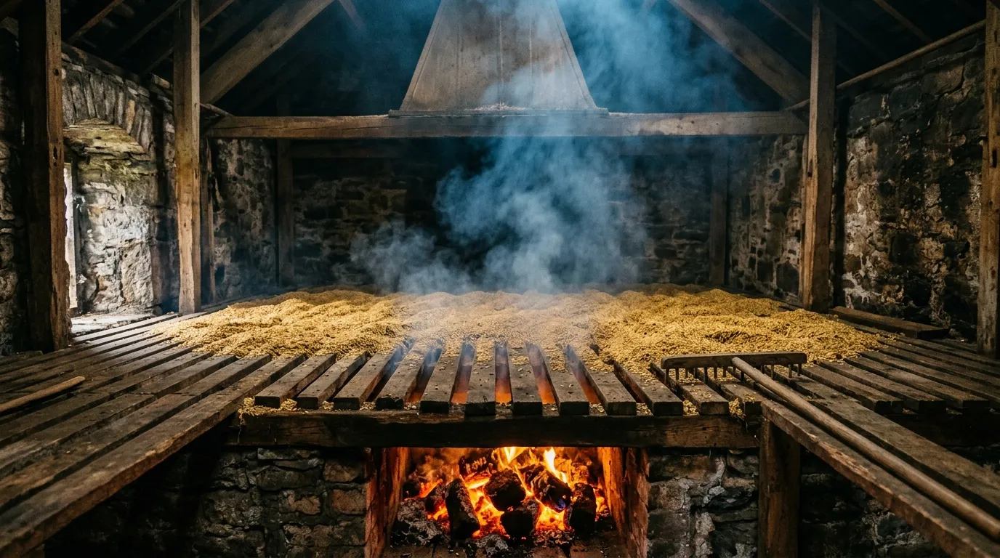

Where green malt is arrested over a hand-fired hearth of coastal sod, infusing the grain with the heavy, iodine-rich smoke of the Hebrides.

The Fuel Source Registry
Commercial kilns use clean, odourless natural gas to dry their malt. We use the damp, pungent, and intensely smoky combustibles dragged straight from the Islay shoreline. The fuel dictates the final spirit.
Combustible: PeatSource: Low-Bank
Intertidal Low-Bank Peat
Cut exclusively from the sinking coastal bogs that border the high-tide mark, this peat is frequently inundated with saltwater during winter storms. It is dense, black, and incredibly difficult to keep alight.
When it finally smoulders, it produces a thick, acrid blue smoke heavily laden with sulfur compounds and marine iodine. This fuel is responsible for the medicinal, tar-rope phenols that define the most extreme Islay malts. It leaves no room for subtlety.
Combustible: FloraSource: Wrack-Line
Air-Dried Bladderwrack Kelp
Harvested by hand from the rocky skerries at low tide, this thick, rubbery seaweed is draped over dry-stone walls and left to dehydrate in the ferocious coastal winds for six weeks until it turns brittle and white with crystallised sea salt.
Thrown onto the dying embers of a peat fire during the final twelve hours of the kilning cycle, it flares violently and imparts a sharp, phenolic salt-smoke finish. It lends a distinct, cured-meat savoriness to the resulting distillate.
Combustible: BrushSource: Machair Dunes
Dune Heather Brush
Gathered from the sandy, wind-battered machair dunes above the shoreline, this low-growing heather is twisted, woody, and highly combustible. It burns fast and extremely hot, making it ideal for the initial drying phase before we choke the fire for smoking.
While the peat provides the heavy, medicinal baseline, the heather brush contributes lighter, aromatic floral top-notes and a dry, wood-smoke character that balances the intense salinity of the grain.
Floor Germination & Turning Doctrine
Managing green malt on a cold, uneven earth floor is an exhausting physical discipline. There are no automated temperature probes or mechanical rakes in our shieling; we rely entirely on weather instinct, historical experience, and manual labour to prevent the germinating grain from turning into an unusable, matted slab.
The process begins with monitoring the chitting indicators—the precise moment the tiny white rootlets breach the husk. If the ambient maritime temperature spikes, the grain respires violently, generating immense internal heat that can kill the enzymes. Our maltsters must plunge their bare hands deep into the piece, feeling for hot spots and assessing the moisture content entirely by touch before deciding when to break the bed.
Turning is executed using broad, wooden malt shovels. The technique requires a rhythmic, sweeping throw that lofts the grain into the cold coastal air, aerating the piece and dispersing carbon dioxide before it hits the floor. A single batch may require turning every four hours, day and night, for seven consecutive days, until the acrospire reaches exactly three-quarters the length of the grain.
Estate Dispatch & Freight Terms
We do not utilise bulk grain tankers or plastic super-sacks. The brutal reality of Islay freight requires packaging designed to withstand North Atlantic weather systems. Every batch is weighed by hand and dispatched in traditional 25kg woven jute sacks.
To preserve the delicate phenolic compounds and prevent the ingress of damp sea air during transit, each sack is fitted with a thick, moisture-resistant inner liner and securely hand-tied. We stencil the batch coordinates, kilning profile, and extraction data directly onto the exterior.
All haulage is entirely dependent on the road-ferry schedules operating out of Port Ellen and Port Askaig. Winter gales frequently suspend the CalMac ferry service for days at a time; clients must account for significant logistical delays between October and March. We will not compromise a kiln run to meet a mainland shipping deadline.
Maltster's Consultation & Custom Roasts
For independent distillers and farmhouse brewers seeking a highly specific flavour architecture, we accept a limited number of commissions for bespoke kilning specs. You dictate the exact fuel ratios, the peat-to-heather smoke cuts, and the precise kilning temperature curves.
We require a preliminary consultation to establish the feasibility of the roast and to agree upon the target phenol levels. Pilot batches are available in 500kg runs, allowing you to test the extraction and fermentation dynamics on your specific equipment before committing to a full seasonal allocation.